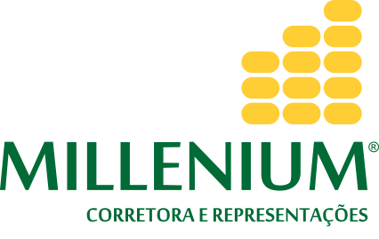

Fechar

Produtos
Farelo de Soja
A soja é considerada o alimento proteico padrão e possui proteína de grande valor biológico, apesar do baixo teor de metionina
Milho
O milho é extensivamente utilizado como alimento humano ou ração animal, devido às suas qualidades nutricionais.
Óleo Degomado
O óleo degomado, é uma excelente fonte de energia para monogástricos, como suínos e aves de corte que necessitam consumo de energia.
DDG
O DDG (ou grãos secos de destilaria) é um subproduto da produção do etanol, que é obtido através da fermentação do amido de grãos de milho, estão cada vez mais populares nas dietas de bovinos no Brasil.
Polpa Cítrica
A polpa de citrus é uma opção bastante interessante pois pode substituir o milho em cerca de 85% a um preço 10% menor.
Outros Produtos

Conheça Nossa Empresa

Sobre Nós
Institucional da nossa empresa

Contato
Entre em contato para fecharmos negócios